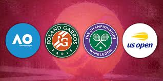
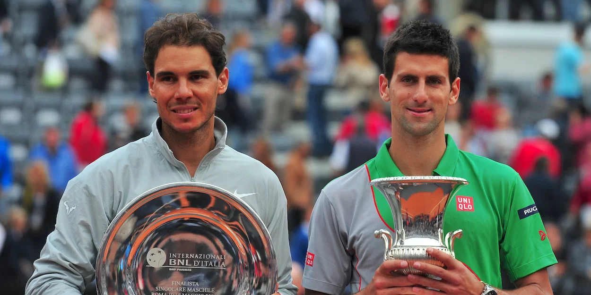

Hello! I am really glad that you have taken time out of your day to
view my HTML project. I hope that you will not be disappointed by the time
you're doing viewing and/or inspecting it.
My basic plan for this page:
This is a completely different page as you might have guessed. It is linked to my original
page, making it accessible with just a click. I plan to show you 2 tables:
one with his results in grandslams and masters 1000s, and if lost - to whom did he lose.
I have also put in a description list that tells you what a grandslam is and what a masters
1000 is.
Contents of this webpage are listed here:
What is a grandslam?
The four Grand Slam tournaments in tennis are the sport’s most prestigious events.
Played on different surfaces, they test players’ versatility and skill.
Here is a list of the name of grandslams, the countries they're hosted in and the type of surface they
are played on:
Name
Country
Month of conduction
Surface
Australian Open
Australia
January
Hard court
French Open
France
May
Clay court
Wimbledon
UK
June / July
Grass
US Open
USA
September
Hard court

The 4 different Grandslams
What is a Masters 1000 event?
The ATP Masters 1000 events are nine elite tennis tournaments held annually, just below Grand Slams in prestige. Featuring top-ranked players, they offer valuable ranking points and global exposure.
Played on various surfaces worldwide, these events test consistency, adaptability, and endurance, making them crucial in shaping the men’s professional tennis season.

Novak Djokovic after winning the Rome masters
List of the Masters 1000 Events is below: